NietBanTinhXa/BaRia,VungTau
涅槃精舎/ブンタウ
ブンタウのキリスト像の近くにある涅槃精舎。やっとマトモな寺に来た。
・・・と思ったけどやっぱり普通ではなかったような・・・
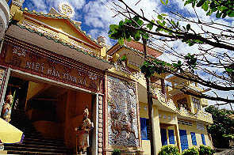
海沿いの道から一本入ったところにある入口。寺域はさして広くないがベトナムでは標準サイズか。
仏教寺院の山門には大抵寺名が漢字とベトナム語（アルファベットに謎の〜とか＾といった表音記号がついたもの）で並記されている。
この国では仏教は中国から伝わったので寺の名前はほとんど中国風であり、それをベトナム語に当てて表記しているのである。
従って当然、大乗仏教であり、道教や儒教が混在しているケースも多い。
外壁は何故か黄色がお好みの御様子。ここも黄色の外壁に青の窓、白い縁取りに裏手に回ると赤い手摺とかなりビビッドな色使いである。
本堂は階段を登った二階にある。一階はプライベートスペースみたいです。
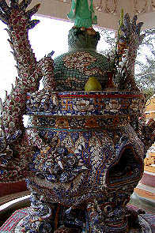
本堂前のテラスにあった香炉。全面陶器のモザイクである。
この国は陶器のモザイクが大好きでこの後もあちこちで傑作を目撃する事になる。
上の半球部分は多分地球儀。こんなものまでモザイクで作り上げる根性に感動。
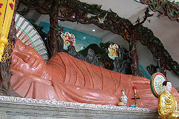
本堂の内部である。中には涅槃精舎の名の通り大きな涅槃像がおわす。大きさは10メートルほどか。
赤い大理石の涅槃像も凄いがその前後に目が釘付け。
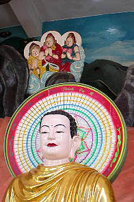
電飾光背である。ミャンマーでもこのような光背は見たが、ベトナムのものは完成度が高い。
というかミャンマーではハンドメイドだったのだが、こちらは規格品のようだ。と思っていたら実際この後訪れた寺のほとんどが同じ光背だった。ベトナム全土の仏像光背を一手に引き受けている電飾光背専門メーカーがいるのだろうか。恐ろしい・・・
後ろの三人組や木にぶら下がったモンキーもイイ味出してるぞ。
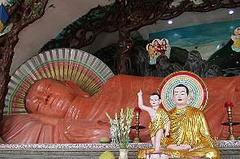 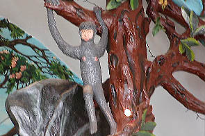
涅槃像の後ろには書き割りのような岩があって、更にその後ろに空と山が描かれた壁面がある。その壁と書き割りの間が1.5メートル位あいていた。もしかしたら書き割りの後ろ（三人組がいるところ）に人工の山かなんかが造ってあってそこから登って上から涅槃像を眺められるのでは・・・
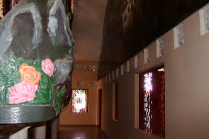
・・・と思ったけど単なる通路でした。
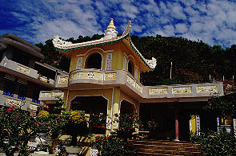
涅槃像のある2階から階段を上がるとテラスがあり観音堂がある。
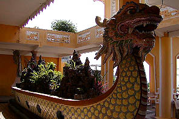 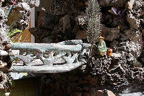
観音堂の前には龍をかたどった船、をかたどった池があり中には盆石の巨大化したものがある。
この巨大盆石もベトナムのお寺では標準装備のアイテムである。所々に橋や階段が設けられ人形やお堂などが配置されている。
立体山水画といったところか。
以前、香港で見た盆栽と似た手法だ。盆石は火山岩のようなスカスカした石をセメントでつなぎ合わせたものなのでお好みの大きさに仕上げられる。
こういったジオラマチックな縮景を楽しむ精神性は仏教国では共通する感覚なのだろうか。
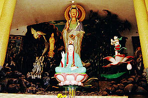 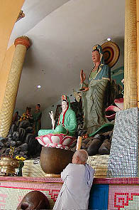 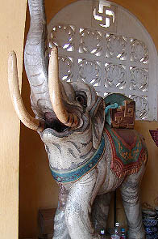
観音堂の内部もジオラマ仕立て。岩の上にも様々な仏像が並んでいる。
写真を撮る前に軽く拝んでから撮ろうとすると坊さんが鐘を鳴らしてくれる。
これも他の寺でもよくあった事だが、写真を撮っている間中、グウォ〜ン、グウォ〜ンと鐘を鳴らし続けているので申し訳ない気分でした。
勿論そんな時は賽銭箱に幾らかの寄付をしなきゃね。
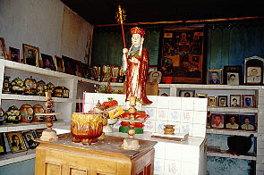 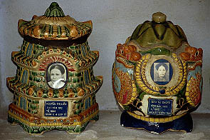
観音堂の脇にあった納骨堂。遺影と遺骨が安置してあった。
骨壷はみな秀逸の出来で是非、自分用に購入したかったのだがどこに売っているかわからなかった。
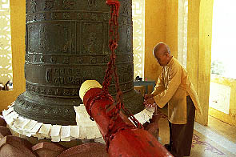
鐘楼には幾らかの寄付をするとこうして坊さんが寄進者の名前と願い事を貼っておいてくれる、らしい。
涅槃像以外にもなかなか見どころの多い寺だった。
次へいきましょう
越南珍寺劇場
珍寺大道場 HOME